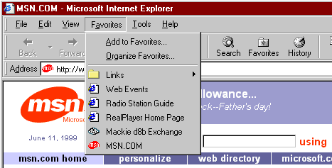

| ||
Shortcut icons in Microsoft® Internet Explorer 5 are a new feature that you can use to display your logo or some other small graphic on the Favorites menu and Address bar. They have no special Web server requirements and are a great way to add brand recognition without requiring the user to download a custom version of Internet Explorer 5. The following graphic displays a shortcut icon for MSN.COM on the Internet Explorer 5 Favorites menu and Address bar.

This article explains how to use shortcut icons in the following three required steps:
For Internet Explorer 5, the required size of a shortcut icon is 16x16 pixels. To create the icon, use an icon editor, such as the one included in Microsoft® Visual Studio® or one of the many other icon editors available. Regardless of the program you use, make sure you set the editor to create an icon that is 16x16 pixels. Otherwise, the icon will be ignored by Internet Explorer.
After creating the icon, you must associate it with your Web page. One way is to save the icon with the default file name of favicon.ico in the root directory of your domain—for example, www.microsoft.com/favicon.ico. Each time your Web page is added to a user's favorites, Internet Explorer automatically searches for this file and places the icon next to all the favorites and quick links originating from your site.
You can also associate the icon with your Web page by saving the icon with a file name other than favicon.ico and adding a line of HTML code in the HEAD section of your Web document. The line of code includes a LINK tag that specifies the location and name of the file. You can include this LINK tag on a per-page basis.
<HEAD> <LINK REL="SHORTCUT ICON" href="http://www.mydomain.com/myicon.ico"> <TITLE>My Title</TITLE> </HEAD>
The only way a shortcut icon appears on a user's Favorites menu and Address bar is if the user chooses to add your page as a favorite. You can add a button or link on your page that prompts the user to add your page. Use the following code to experiment with this feature.
<SCRIPT>
<!--
if ((navigator.appVersion.indexOf("MSIE") > 0)
&& (parseInt(navigator.appVersion) >= 4)) {
document.write("<U>
<SPAN STYLE='color:blue;cursor:hand;'
onclick='window.external.
AddFavorite(location.href, document.title);'>
Add this page to your favorites</SPAN></U>");
}
//-->
</SCRIPT>
Did you find this topic useful? Suggestions for other topics? Write us!
© 1999 Microsoft Corporation. All rights reserved. Terms of use.